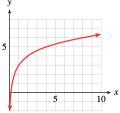
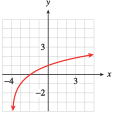
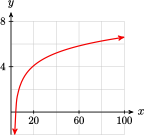
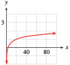
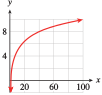
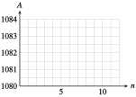

Section 5.2 Logarithmic Functions
Subsection Inverse of the Exponential Function
Inverse functions are really a generalization of inverse operations. For example, raising to the \(n\)th power and taking \(n\)th roots are inverse operations. In fact, we use the following rule to define cube roots:
Compare this rule to the definition of inverse functions from Section 5.1. In this case, if \(f(x) = x^3\) and \(g(x) = \sqrt[3]{x}\text{,}\) we see that
We have shown that the two functions \(f(x) = x^3\) and \(g(x) = \sqrt[3]{x}\) are inverse functions.
In Chapter 4, we saw that a similar rule relates the operations of raising a base \(b\) to a power and taking a base \(b\) logarithm, because they are inverse operations.
Conversion Formulas for Logarithms.
For any base \(b \gt 0, b\ne 1\text{,}\)
We can now define the logarithmic function, \(g(x) = \log_{b}{x}\text{,}\) that takes the log base \(b\) of its input values. The conversion formulas tell us that the log function, \(g(x) = \log_{b}{x}\text{,}\) is the inverse of the exponential function, \(f(x) = b^x\text{.}\)
Logarithmic Function.
The logarithmic function base \(b\text{,}\) \(g(x) = \log_b x\text{,}\) is the inverse of the exponential function of the same base, \(f(x) = b^x\text{.}\)
Notebook 5.31. QuickCheck 1.
For example, the function \(g(x) = \log_2 x\) is the inverse of \(f(x) = 2^x\text{.}\) Each function undoes the effect of the other. So, if we start with \(x = 3\text{,}\) apply \(f\text{,}\) and then apply \(g\) to the result, we return to the original number, 3.
We can write both calculations together as
A similar equation holds for any value of \(x\) and for any base \(b \gt 0\text{.}\) In other words, applying first the exponential function and then the log function returns the original input value, so that
Example 5.32.
Simplify each expression.
- \(\displaystyle \log_{4}{4^6}\)
- \(\displaystyle \log_{8}{8^{2a+3}}\)
-
In this expression, we start with \(6\text{,}\) apply the exponential function with base \(4\text{,}\) and then take a logarithm base \(4\text{.}\) Because the logarithm is the inverse of the exponential function, we return to the original number, \(6\text{.}\)
\begin{equation*} x=\alert{6}\mathrel{\mathop{\rightarrow}^{\blert{\text{Apply the}}}_{\blert{\text{exponential function}}}} 4^{\alert{6}} \mathrel{\mathop{\rightarrow}^{\blert{\text{Apply the}}}_{\blert{\text{log function}}}} \log_{4}\left(4^{\alert{6}}\right) = \mathrel{\mathop{\alert{6}}^{\blert{\text{Original}}}_{\blert{\text{number}}}} \end{equation*} The input of the exponential function is the expression \(2a + 3\text{.}\) Because the bases of the log and the exponential function are both \(8\text{,}\) they are inverse functions, and applying them in succession returns us to the original input. Thus, \(\log_{8}{8^{2a+3}} = 2a + 3\text{.}\)
Notebook 5.33. Practice 1.
We can also apply the two functions in the opposite order. For example,
To see that this equation is true, we simplify the exponent first. We start with \(8\text{,}\) and apply the log base \(2\) function. Because \(\log_2 8 = 3\text{,}\) we have
Of course, a similar equation holds for any positive value of \(x\) and any base \(b \gt 0, b\ne 1\text{:}\)
Example 5.34.
Simplify each expression.
- \(\displaystyle 10^{\log_{10}{1000}}\)
- \(\displaystyle Q^{\log_{Q}{25}}\text{, for } Q \gt 0, Q\ne 1\)
- In this expression, we start with \(1000\text{,}\) take the logarithm base \(10\text{,}\) and then apply the exponential function base \(10\) to the result. We return to the original input, so\begin{equation*} 10^{\log_{10}{1000}} = 1000 \end{equation*}
- The log function, \(\log_{Q}{x}\text{,}\) and the exponential function, \(Q^x\text{,}\) are inverse functions, so\begin{equation*} Q^{\log_{Q}{25}} = 25 \end{equation*}
Notebook 5.35. Practice 2.
We summarize these relationships as follows.
Exponential and Logarithmic Functions.
Because \(f(x) = b^x\) and \(g(x) = \log_{b}{x}\) are inverse functions for \(b \gt 0, b\ne 1\text{,}\)
Subsection Graphs of Logarithmic Functions
We can obtain a table of values for \(g(x) = \log_2 x\) by making a table for \(f(x) = 2^x\) and then interchanging the columns, as shown in the tables below. You can see that the graphs of \(f(x) = 2^x\) and \(g(x) = \log_2 x\text{,}\) shown in the figre, are symmetric about the line \(y = x\text{.}\)
| \(x\) | \(f(x)=2^x\) |
| \(-2\) | \(\dfrac{1}{4}\) |
| \(-1\) | \(\dfrac{1}{2}\) |
| \(0\) | \(1\) |
| \(1\) | \(2\) |
| \(2\) | \(4\) |
| \(x\) | \(g(x)=\log_{2}{x}\) |
| \(\dfrac{1}{4}\) | \(-2\) |
| \(\dfrac{1}{2}\) | \(-1\) |
| \(1\) | \(0\) |
| \(2\) | \(1\) |
| \(4\) | \(2\) |

The same procedure works for graphing log functions with any base: If we want to find values for the function \(y=\log_b x\text{,}\) we can find the values for the exponential function \(y=b^x\text{,}\) and then interchange the \(x\) and \(y\) values in each ordered pair.
Notebook 5.36. QuickCheck 2.
Example 5.37.
Graph the function \(f(x)=10^x\) and its inverse \(g(x)=\log_{10}{x}\) on the same axes.
We start by making a table of values for the function \(f(x)=10^x\text{.}\) We can make a table of values for the inverse function, \(g(x) = \log_{10}{x}\text{,}\) by interchanging the components of each ordered pair in the table for \(f\text{.}\)
| \(x\) | \(f(x)\) |
| \(-2\) | \(0.01\) |
| \(-1\) | \(0.1\) |
| \(0\) | \(1\) |
| \(1\) | \(10\) |
| \(2\) | \(100\) |
| \(x\) | \(g(x)\) |
| \(0.01\) | \(-2\) |
| \(0.1\) | \(-1\) |
| \(1\) | \(0\) |
| \(10\) | \(1\) |
| \(100\) | \(2\) |

We plot each set of points and connect them with smooth curves to obtain the graphs shown above.
Notebook 5.38. Practice 3.
While an exponential growth function increases very rapidly for positive values, its inverse, the logarithmic function, grows extremely slowly, as you can see in Example 5.37. In addition, the logarithmic function \(y = \log_b x\) for any base \(b \gt 0, b \ne 1\text{,}\) has the following properties.
Logarithmic Functions \(y = \log_b x\).
- Domain: all positive real numbers
- Range: all real numbers
- \(x\)-intercept: \((1, 0)\)
- \(y\)-intercept: none
- Vertical asymptote at \(x = 0\)
- The graphs of \(y = \log_b x\) and \(y = b^x\) are symmetric about the line \(y = x\text{.}\)
Notebook 5.39. Pause and Reflect.
Because the domain of a logarithmic function includes only the positive real numbers, the logarithm of a negative number or zero is undefined.
Example 5.40.
- Find the inverse of the function \(f(x) = 2^{x-3} - 4\text{.}\)
- Graph \(f\) and \(f^{-1}\) on the same grid.
- State the domain and range of \(f\) and of \(f^{-1}\text{.}\)
-
We write the function as \(y = 2^{x-3} - 4\text{,}\) and solve for \(x\) in terms of \(y\text{.}\) First, we isolate the power:
\begin{equation*} \begin{aligned}[t] y + 4 \amp= 2^{x-3}\amp\amp \blert{\text{Take logs base 2.}}\\ \log_{2}{(y + 4)} \amp= \log_{2}{2}^{x-3} = x - 3\\ x \amp = 3 + \log_{2}{(y + 4)} \end{aligned} \end{equation*}The inverse function is \(f^{-1}(y) = 3 + \log_{2}{(y + 4)}\text{.}\) However, to graph both \(f\) and \(f^{-1}\) on the same grid, we write the inverse function as \(f^{-1}(x) = 3 + \log_{2}{(x + 4)}\text{.}\)
-
To graph \(f\text{,}\) we translate the graph of \(y = 2^x\) by \(3\) units to the right and \(4\) units down. The graph of \(f^{-1}\) looks like the graph of \(y = \log_2 x\text{,}\) but shifted \(4\) units to the left and \(3\) units up. The graphs are shown below, along with the line \(y = x\text{.}\)

-
The function \(f\) is a translation of an exponential function, and its domain consists of all real numbers. Because the graph is shifted \(4\) units down, the range of \(f\) is \((-4,\infty)\text{.}\) Because the log of a negative number or zero is undefined, for \(f^{-1}(x) = 3 + \log_{2}{(x + 4)}\text{,}\) we must have \(x + 4 \gt 0\text{,}\) or \(x \gt -4\text{.}\) We can verify on the graph that the range of \(f^{-1}\) includes all real numbers. Thus,
\begin{equation*} \begin{aligned}[t] \amp\text{Domain}(f) = \text{all real numbers} = \text{Range}(f^{-1})\\ \amp\text{Range}(f) = (-4,\infty) = \text{Domain} (f^{-1}) \end{aligned} \end{equation*}
Notebook 5.41. Practice 4.

Notebook 5.42. Pause and Reflect.
Subsection Evaluating Logarithmic Functions
We can use the LOG key on a calculator to evaluate the function \(f(x) = \log_{10}{x}\text{.}\)
Example 5.43.
Let \(f(x) = \log_{10}{x}\text{.}\) Evaluate the following expressions.
- \(\displaystyle f(35)\)
- \(\displaystyle f(-8)\)
- \(\displaystyle 2 f(16) + 1\)
- \(\displaystyle f (35) = \log_{10}{35}\approx 1.544\)
- Because \(-8\) is not in the domain of \(f\text{,}\) \(f(-8)\text{,}\) or \(\log_{10}{(-8)}\text{,}\) is undefined.
- \(\displaystyle 2 f(16) + 1 = 2(\log_{10}{16}) + 1\approx2(1.204) + 1 = 3.408\)
Notebook 5.44. QuickCheck 3.
Notebook 5.45. Practice 5.
Subsection Logarithmic Equations
A logarithmic equation is one in which the variable appears inside of a logarithm. For example,
is a log equation. To solve a log equation, remember that logarithms and exponentials with the same base are inverse functions. Therefore,
Thus, we can rewrite a logarithmic equation in exponential form.
Example 5.46.
Solve for \(x\text{.}\)
- \(\displaystyle 2(\log_3 x) - 1 = 4\)
- \(\displaystyle \log_{10}{(2x + 100)} = 3\)
-
We isolate the logarithm, then rewrite the equation in exponential form:
\begin{equation*} \begin{aligned}[t] 2(\log_3 x) \amp = 5\amp\amp \blert{\text{Divide both sides by 5.}}\\ \log_3 x \amp = \frac{5}{2}\amp\amp \blert{\text{Convert to exponential form.}}\\ x \amp = 3^{5/2} \end{aligned} \end{equation*} -
First, we convert the equation to exponential form.
\begin{equation*} 2x + 100 = 10^3 = 1000 \end{equation*}Now we can solve for \(x\) to find \(2x = 900\text{,}\) or \(x = 450\text{.}\)
Notebook 5.47. Practice 6.
Example 5.48.
If \(f(x) = \log_{10}{x}\text{,}\) find \(x\) so that \(f(x)=-3.2\text{.}\)
We must solve the equation \(\log_{10}{x} = -3.2\text{.}\) Rewriting the equation in exponential form yields
Note 5.49. Evaluating \(10^x\).
In Example 5.48, the expression \(10^{-3.2}\) can be evaluated in two different ways with a calculator. We can use the ^ key and press
\(10\) ^ (-) \(3.2\) ENTER
which gives 6.30957344 E -4, or approximately \(0.00063\text{.}\) Alternatively, because \(10^x\) is the inverse function for \(\log x\text{,}\) we can press
2nd LOG (-) \(3.2\) ENTER
which gives the same answer as before.
Notebook 5.50. Practice 7.
Subsection Using the Properties of Logarithms
The properties of logarithms are useful in solving both exponential and logarithmic equations. To solve logarithmic equations, we first combine any expressions involving logs into a single logarithm.
Example 5.51.
Solve \(~~\log_{10}{(x + 1)} + \log_{10}{(x - 2)}= 1\text{.}\)
We use Property (1) of logarithms to rewrite the left-hand side as a single logarithm:
Once the left-hand side is expressed as a single logarithm, we can rewrite the equation in exponential form as
from which
Thus, \(x = 4\) or \(x = -3\text{.}\) The number \(-3\) is not a solution of the original equation, because neither \(\log_{10}{(x + 1)}\) nor \(\log_{10}{(x - 2)}\) is defined for \(x = -3\text{.}\) The solution of the original equation is \(4\text{.}\)
In Example 5.51, the apparent solution \(x = -3\) is called extraneous because it does not solve the original equation. We should always check for extraneous solutions when solving log equations. The following steps give a rough outline for solving log equations.
Steps for Solving Logarithmic Equations.
- Use the properties of logarithms to combine all logs into one log.
- Isolate the log on one side of the equation.
- Convert the equation to exponential form.
- Solve for the variable.
- Check for extraneous solutions.
Notebook 5.52. QuickCheck 4.
Notebook 5.53. Practice 8.
Notebook 5.54. Pause and Reflect.
Subsection Section Summary
Subsubsection Vocabulary
Look up the definitions of new terms in the Glossary.
Logarithmic function
Logarithmic equation
Extraneous solution
Subsubsection CONCEPTS
We define the logarithmic function, \(g(x) = \log_b x\text{,}\) which takes the log base \(b\) of its input values. The log function \(g(x) = \log_b x\) is the inverse of the exponential function \(f (x) = b^x\text{.}\)
Exponential and Logarithmic Functions.
Because \(f(x) = b^x\) and \(g(x) = \log_{b}{x}\) are inverse functions for \(b \gt 0, b\ne 1\text{,}\)
\begin{equation*} \log_{b}{b^x} = x\text{, for all }x ~~~~~\text{ and }~~~~~b^{\log_b x} = x\text{, for }x \gt 0 \end{equation*}Logarithmic Functions \(y = \log_b x\).
- Domain: all positive real numbers
- Range: all real numbers
- \(x\)-intercept: \((1, 0)\)
- \(y\)-intercept: none
- Vertical asymptote at \(x = 0\)
- The graphs of \(y = \log_b x\) and \(y = b^x\) are symmetric about the line \(y = x\text{.}\)
A logarithmic equation is one in which the variable appears inside of a logarithm. We can solve logarithmic equations by converting to exponential form.
Steps for Solving Logarithmic Equations.
- Use the properties of logarithms to combine all logs into one log.
- Isolate the log on one side of the equation.
- Convert the equation to exponential form.
- Solve for the variable.
- Check for extraneous solutions.
Subsubsection STUDY QUESTIONS
Can the output of the function \(y = \log_b x\) be negative?
Francine says that \(\log_2 \dfrac{1}{x}= -\log_2 x\text{.}\) Is she correct? Why or why not?
Sketch a typical logarithmic function.
-
Simplify:
\(10^{\log 13} \)
\(7^{\log_7 13} \)
-
Why is the following attempt to solve the equation incorrect?
\begin{align*} \blert{\text{Solve:}}\hphantom{blank}\log x + \log(x + 1) \amp= 2\\ x + x + 1 \amp= 10^2 \end{align*}
Subsubsection SKILLS
Practice each skill in the Homework problems listed.
Evaluate log functions: #1–16, 27 and 28
Simplify expressions involving logs: #15 and 16, 19, and 20
Graph logarithmic functions and transformations of log functions: #1–4, 25–28
Find formulas for inverse functions: #17–24
Solve logarithmic equations: #29–54
Solve formulas involving logs: #55–60
Exercises Homework 5.2
In Problems 1–4,
Make tables of values for each exponential function and its inverse logarithmic function.
Graph both functions on the same set of axes.
1.
\(f(x)=2^x \)
2.
\(f(x)=3^x \)
3.
\(f(x)=\left(\dfrac{1}{3} \right)^x \)
4.
\(f(x)=\left(\dfrac{1}{2} \right)^x \)
5.
How large must \(x\) be before the graph of \(y = \log_{10} x\) reaches a height of \(4\text{?}\)
How large must \(x\) be before the graph of \(y = \log_{10} x\) reaches a height of \(8\text{?}\)
6.
How large must \(x\) be before the graph of \(y = \log_{2} x\) reaches a height of \(5\text{?}\)
How large must \(x\) be before the graph of \(y = \log_{10} x\) reaches a height of \(10\text{?}\)
7.
For what values of \(x\) is \(y = \log_{10} x \lt -2\text{?}\)
8.
For what values of \(x\) is \(y = \log_{2} x \lt -3\text{?}\)
In Problems 9–14, \(f(x) = \log_{10} x\text{.}\) Evaluate.
9.
\(f(487)+f(206) \)
\(f(487+206) \)
10.
\(f(93)+f(1500) \)
\(f(93+1500) \)
11.
\(f(-7) \)
\(6f(28) \)
12.
\(f(0) \)
\(3f(41 ) \)
13.
\(18-5f(3) \)
\(\dfrac{2}{5+f(0.6)} \)
14.
\(15-4f(7) \)
\(\dfrac{3}{2+f(0.2)} \)
15.
Let \(f(x) = 3^x\) and \(g(x) = \log_3 x\text{.}\)
Compute \(f (4)\text{.}\)
Compute \(g[ f (4)]\text{.}\)
Explain why \(\log_3 3^x = x\) for any \(x\text{.}\)
Compute \(\log_3 3^{1.8}\text{.}\)
Simplify \(\log_3 3^a\text{.}\)
16.
Let \(f(x) = 2^x\) and \(g(x) = \log_2 x\text{.}\)
Compute \(f (32)\text{.}\)
Compute \(g[ f (32)]\text{.}\)
Explain why \(2^{\log_2 x} = x\) for any \(x\gt 0\text{.}\)
Compute \(2^{\log_2 6} \text{.}\)
Simplify \(2^{\log_2 Q}\text{.}\)
17.
If \(h(r ) = \log_2 r\text{,}\) find \(h^{-1}(8)\text{.}\)
If \(H(w) = 3^w\text{,}\) find \(H^{-1}\left(\dfrac{1}{9} \right) \text{.}\)
18.
If \(g(z ) = \log_3 z\text{,}\) find \(g^{-1}(-3)\text{.}\)
If \(G(q) = 2^q\text{,}\) find \(G^{-1}(1) \text{.}\)
For Problems 19–20, simplify.
19.
\(10^{\log 2k} \)
\(10^{3\log x} \)
\((\sqrt{10})^{\log x} \)
\(\log 100^m \)
20.
\(\log 10^{(1-x)} \)
\(100^{\log 2x} \)
\((0.1)^{\log (x-1)} \)
\(\log 10^{\log 10} \)
21.
What is the domain of the function \(f(x) = 4 + \log_3(x - 9)\text{?}\)
Find a formula for \(f^{-1}(x)\text{.}\)
22.
What is the domain of the function \(f(x) = 1- \log_2(16-4x)\text{?}\)
Find a formula for \(f^{-1}(x)\text{.}\)
23.
Find the inverse of the function \(f (x) = 100 - 4^{x+2}\text{.}\)
Show that \(f^{-1}\) undoes the effect of \(f\) on \(x = 1\text{.}\)
Show that \(f\) undoes the effect of \(f^{-1}\) on \(x = 84\text{.}\)
24.
Find the inverse of the function \(f (x) = 5 + 2^{-x}\text{.}\)
Show that \(f^{-1}\) undoes the effect of \(f\) on \(x = -2\text{.}\)
Show that \(f\) undoes the effect of \(f^{-1}\) on \(x = 6\text{.}\)
For Problems 25–26, match each graph to its equation.
25.
\(y = \log_2(x - 3) \)
\(y = 3 + \log_2 x \)
\(y=2 - \log_2 x \)
\(y = \log_2(x + 4) - 1 \)
- 

- 
- 
26.
\(y = 5\log x \)
\(y = \log \dfrac{x}{2} \)
\(y= \log \dfrac{1}{x} \)
\(y = \log(-x) \)
- 


- 
27.
In a psychology experiment, volunteers were asked to memorize a list of nonsense words, then 24 hours later were tested to see how many of the words they recalled. On average, the subjects had forgotten \(20\%\) of the words. The researchers found that the more lists their volunteers memorized, the larger the fraction of words they were unable to recall. (Source: Underwood, Scientific American, vol. 210, no. 3)
| Number of lists, \(n\) | \(1\) | \(4\) | \(8\) | \(12\) | \(16\) | \(20\) |
| Percent forgotten, \(F\) | \(20\) | \(40\) | \(55\) | \(66\) | \(74\) | \(80\) |
Plot the data. What sort of function seems to fit the data points?
-
Psychologists often describe rates of forgetting by logarithmic functions. Graph the function
\begin{equation*} f (n) = 16.6 + 46.3 \log n \end{equation*}on the same graph with your data. Comment on the fit.
What happens to the function \(f (n)\) as \(n\) grows increasingly large? Does this behavior accurately reflect the situation being modeled?
28.
The water velocity at any point in a stream or river is related to the logarithm of the depth at that point. For the Hoback River near Bondurant, Wyoming,
where \(v\) is the velocity of the water, in feet per second, and \(d\) is the vertical distance from the stream bed, in feet, at that point. For Pole Creek near Pinedale, Wyoming,
Both streams are \(1.2\) feet deep at the locations mentioned. (Source: Leopold, Luna, Wolman, and Gordon, 1992)
-
Complete the table of values for each stream.
Distance from bed (feet) \(0.2\) \(0.4\) \(0.6\) \(0.8\) \(1.0\) \(1.2\) Velocity, Hoback
River, (ft/sec)Velocity, Pole Creek (ft/sec) If you double the distance from the bed, by how much does the velocity increase in each stream?
Plot both functions on the same graph.
The average velocity of the entire stream can be closely approximated as follows: Measure the velocity at \(20\%\) of the total depth of the stream from the surface and at \(80\%\) of the total depth, then average these two values. Find the average velocity for the Hoback River and for Pole Creek.
In Problems 29–30, \(f (x) = \log_{10} x\text{.}\) Solve for \(x\text{.}\)
29.
\(f (x) = 1.41\)
\(f (x) = -1.69\)
\(f (x) = 0.52\)
30.
\(f (x) = 2.3\)
\(f (x) = -1.3\)
\(f (x) = 0.8\)
For Problems 31-38, convert the logarithmic equation to exponential form.
31.
\(\log_{16}256 = w\)
32.
\(\log_{9}729 = y\)
33.
\(\log_{b}9 = -2\)
34.
\(\log_{b}8 = -3\)
35.
\(\log_{10}A = -2.3\)
36.
\(\log_{10}C = -4.5\)
37.
\(\log_{u}v = w\)
38.
\(\log_{m}n = p\)
For Problems 39-46, solve for the unknown value.
39.
\(\log_{b} 8 = 3\)
40.
\(\log_{b} 625 = 4\)
41.
\(\log_{b} 10 = \dfrac{1}{2} \)
42.
\(\log_{b} 0.1 = -1\)
43.
\(\log_{2} (3x-1) = 5 \)
44.
\(\log_{5} (9-4x) = 3\)
45.
\(3(\log_{7} x) + 5=7 \)
46.
\(5(\log_{2} x)+6 = -14\)
For Problems 47-54, solve the logarithmic equation.
47.
\(\log_{10} x + \log_{10}(x + 21) = 2\)
48.
\(\log_{10} (x+3) + \log_{10}x = 1\)
49.
\(\log_{8} (x+5) - \log_{8}2 = 1\)
50.
\(\log_{10} (x-1) - \log_{10}4 = 2\)
51.
\(\log_{10} (x+2) + \log_{10}(x-1) = 1\)
52.
\(\log_{4} (x+8) - \log_{4}(x+2) = 2\)
53.
\(\log_{3} (x-2) - \log_{3}(x+1) = 3\)
54.
\(\log_{10} (x+3) - \log_{10}(x-1) = 1\)
For Problems 55-60, solve for the indicated variable.
55.
\(t = T \log_{10}\left(1+\dfrac{A}{k} \right)\text{,}\) for \(A\)
56.
\(\log_{10} R= \log_{10} R_0 +kt \text{,}\) for \(R\)
57.
\(N=N_0 \log_b (ks) \text{,}\) for \(s\)
58.
\(T=\dfrac{H\log_{10}\dfrac{N}{N _0} }{\log_{10} \dfrac{1}{2}} \text{,}\) for \(N\)
59.
\(M=\sqrt{\dfrac{\log_{10}H}{k\log_{10} H_0}} \text{,}\) for \(H\)
60.
\(h=a-\sqrt{\dfrac{\log_{10}B}{t}} \text{,}\) for \(B\)
61.
Choose the graph for each function described below.
- The area, \(A\text{,}\) of a pentagon is a quadratic function of the length, \(l\text{,}\) of its side.
- The strength, \(F\text{,}\) of a hurricane varies inversely with its speed, \(s\text{.}\)
- The price of food has increased by \(3\%\) every year for a decade.
- The magnitude, \(M\text{,}\) of a star is a logarithmic function of its brightness, \(I\text{.}\)
- The speed of the train increased at a constant rate.
- If you do not practice a foreign language, you lose \(\frac{1}{8} \) of the words in your working vocabulary, \(V\text{,}\) each year.
62.
For each of the functions listed below, select the graph of its inverse function, if possible, from the figures labeled I–VI. (The inverse of one of the functions is not shown.)
\(f (x) = 2^x\)
\(f (x) = x^2, ~~x \ge 0\)
\(f (x) = \dfrac{2}{x} \)
\(f(x)=\sqrt{x} \)
\(f (x) = \log_2 x\)
\(f(x)=\left(\dfrac{1}{2} \right)^x \)


For Problems 63-64, graph the function on the domain [-4, 4] and a suitable range. Which have inverses that are also functions?
63.
\(f (x) = 5(2^{-x^2})\)
\(f (x) = 2^x + 2^{-x}\)
64.
\(f(x)=5(\log(x))^2+1 \)
\(f(x)=5\log(x^2+1) \)
For Problems 65-68, graph the pair of functions on your calculator. Explain the result.
65.
\(f (x) = \log(2x), ~~~g(x) = \log 2 + \log x\)
66.
\(f (x) = \log\left(\dfrac{x}{3}\right), ~~~g(x) = \log x - \log 3\)
67.
\(f (x) =\log\left(\dfrac{1}{x}\right), ~~~g(x) = -\log x\)
68.
\(f (x) = \log(x^3), ~~~g(x) = 3 \log x\)
69.
-
Complete the following table.
\(x\) \(x^2\) \(\log_{10}x\) \(\log_{10}x^2 \) \(1\) \(\hphantom{00000}\) \(\hphantom{0000000}\) \(\hphantom{0000000}\) \(2\) \(\hphantom{00000}\) \(\hphantom{00000}\) \(\hphantom{00000}\) \(3\) \(\hphantom{00000}\) \(\hphantom{00000}\) \(\hphantom{00000}\) \(4\) \(\hphantom{00000}\) \(\hphantom{00000}\) \(\hphantom{00000}\) \(5\) \(\hphantom{00000}\) \(\hphantom{00000}\) \(\hphantom{00000}\) \(6\) \(\hphantom{00000}\) \(\hphantom{00000}\) \(\hphantom{00000}\) Do you notice a relationship between \(\log_{10} x\) and \(\log_{10} x^2\text{?}\) State the relationship as an equation.
70.
-
Complete the following table.
\(x\) \(\dfrac{1}{x} \) \(\log_{10}x\) \(\log_{10}\dfrac{1}{x} \) \(1\) \(\hphantom{00000}\) \(\hphantom{0000000}\) \(\hphantom{0000000}\) \(2\) \(\hphantom{00000}\) \(\hphantom{00000}\) \(\hphantom{00000}\) \(3\) \(\hphantom{00000}\) \(\hphantom{00000}\) \(\hphantom{00000}\) \(4\) \(\hphantom{00000}\) \(\hphantom{00000}\) \(\hphantom{00000}\) \(5\) \(\hphantom{00000}\) \(\hphantom{00000}\) \(\hphantom{00000}\) \(6\) \(\hphantom{00000}\) \(\hphantom{00000}\) \(\hphantom{00000}\) Do you notice a relationship between \(\log_{10} x\) and \(\log_{10} \dfrac{1}{x} \text{?}\) State the relationship as an equation.
In Problems 69 and 70, you found relationships between \(\log_{10} x\) and \(\log_{10} x^2\text{,}\) and between \(\log_{10} x\) and \(\log_{10} \dfrac{1}{x}\text{.}\) Assumingthat those relationships hold for any base, complete the following tables and use them to graph the given functions.
71.
| \(x\) | \(y=\log_e x \) |
| \(1\) | \(0\) |
| \(2\) | \(0.693\) |
| \(4\) | |
| \(16\) | \(\) |
| \(\frac{1}{2} \) | |
| \(\frac{1}{4} \) | \(\) |
| \(\frac{1}{16} \) | \(\) |
72.
| \(x\) | \(y=\log_f x \) |
| \(1\) | \(0\) |
| \(2\) | \(0.431\) |
| \(4\) | |
| \(16\) | \(\) |
| \(\frac{1}{2} \) | |
| \(\frac{1}{4} \) | \(\) |
| \(\frac{1}{16} \) | \(\) |
Subsection Investigation
Investigation 5.1. Interest Compounded Continuously.
We learned in Section 4.4 that the amount, \(A\) (principal plus interest), accumulated in an account with interest compounded \(n\) times annually is
where \(P\) is the principal invested, \(r\) is the interest rate, and \(t\) is the time period, in years.
-
Suppose you keep \(\$1000\) in an account that pays \(8\%\) interest. How much is the amount \(A\) after \(1\) year if the interest is compounded twice a year? Four times a year?
\begin{gather*} n = \alert{2}: A = 1000\left(1 + \frac{0.08}{\alert{2}} \right)^{\alert{2}(1)}= \\ n = \alert{4}: A = 1000\left(1 + \frac{0.08}{\alert{4}} \right)^{\alert{4}(1)}= \end{gather*} -
What happens to \(A\) as we increase \(n\text{,}\) the number of compounding periods per year? Fill in the table showing the amount in the account for different values of \(n\text{.}\)
\(n\) \(A\) \(1\) (annually) \(1080\) \(2\) (semiannually) \(\) \(4\) (quarterly) \(\) \(6\) (bimonthly) \(\) \(12\) (monthly) \(\) \(365\) (daily) \(\) \(1000\) \(\) \(10,000\) \(\)  Plot the values in the table from \(n = 1\) to \(n = 12\text{,}\) and connect them with a smooth curve. Describe the curve: What is happening to the value of \(A\text{?}\)
-
In part (2), as you increased the value of \(n\text{,}\) the other parameters in the formula stayed the same. In other words, \(A\) is a function of \(n\text{,}\) given by \(A = 1000 (1 + \dfrac{0.08}{n} )^n\text{.}\) Use your calculator to graph A on successively larger domains:
\(\text{Xmin} = 0, \text{Xmax} = 12; \text{Ymin} = 1080, \text{Ymax} = 1084\)
\(\text{Xmin} = 0, \text{Xmax} = 50; \text{Ymin} = 1080, \text{Ymax} = 1084\)
\(\text{Xmin} = 0, \text{Xmax} = 365; \text{Ymin} = 1080, \text{Ymax} = 1084\)
Use the Trace feature or the Table feature to evaluate \(A\) for very large values of \(n\text{.}\) Rounded to the nearest penny, what is the largest value of \(A\) that you can find?
As \(n\) increases, the values of \(A\) approach a limiting value. Although \(A\) continues to increase, it does so by smaller and smaller increments and will never exceed \(\$1083.29\text{.}\) When the number of compounding periods increases without bound, we call the limiting result continuous compounding.
Is there an easier way to compute \(A\) under continues compounding? Yes! Compute \(1000e^{0.08}\) on your calculator. (Press
2ndLNto enter \(e^x\text{.}\)) Compare the value to your answer in part (5) for the limiting value. The number \(e\) is called the natural base. We'll compute its value shortly.-
Repeat your calculations for two other interest rates, \(15\%\) and (an extremely unrealistic) \(100\%\text{,}\) again for an investment of \(\$1000\) for \(1\) year. In each case, compare the limiting value of \(A\text{,}\) and compare to the value of \(1000e^r\text{.}\)
\(r=0.15\) \(n\) \(A\) \(1\) \(115\) \(2\) \(\hphantom{00000}\) \(4\) \(\) \(6\) \(\) \(12\) \(\) \(3652\) \(\) \(1000\) \(\) \(10,000\) \(\) \(~~1000e^{0.15}= \) \(r=1\) \(n\) \(A\) \(1\) \(200\) \(2\) \(\hphantom{00000}\) \(4\) \(\) \(6\) \(\) \(12\) \(\) \(3652\) \(\) \(1000\) \(\) \(10,000\) \(\) \(~~1000e^{1}= \)
In part (8b), you have computed an approximation for \(1000e\text{.}\) What is the value of \(e\text{,}\) rounded to \(5\) decimal places?
-
Complete the table of values. What does \(\left(1 + \dfrac{1}{n} \right)^n\) appear to approach as \(n\) increases?
\(n\) \(100\) \(1000\) \(10,000\) \(100,000\) \(\left(1+\frac{1}{n} \right)^n \)